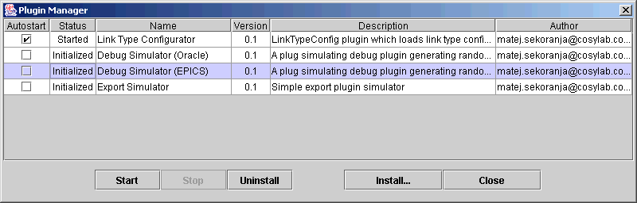

| VisualDCT Plugins | |
|---|---|
| Project: | VisualDCT |
| Classification: | User's Documentation |
| Identification: | CSL-DOC-02-XX |
| Copyright © 2002 by Cosylab Ltd. All Rights Reserved. | |
| Revision | Date | Author | Section | Modification |
|---|---|---|---|---|
| 1.0 | 2002-09-21 | Sunil Sah | ||
| all | Created. |
This document is classified as a public document. Redistribution and use, with or without modification, are permitted provided that:
| ID | Author | Reference | Revision | Date | Publisher |
|---|---|---|---|---|---|
| 1 | Matej Sekoranja | VisualDCT Project | 2002 | Cosylab, Ltd. |
This document's meta-information (authors, revision history, table of contents, ...) can be found above. What follows below is the body of the document. The body is composed of several sections, which may be further composed of subsections.
Typographical styles are used to denote entities of different kinds. For a full list of entities and their respective typographic conventions, please refer to the Styles section of the XML Documentation document.
When viewing the document in a non-printed form, it is possible to submit comments regarding a given section to the document's owner. This is achieved by clicking the mail icon next to the section title. For this to work, your mail must be configured to properly handle the mailto URLs.
This document is divided into three sections. The first describes how to create a VisualDCT plugin. The second explains how to include the parameters of the plugin and the information that is required by VisualDCT. The last section is about Plugin Manager, which can be used to install and manipulate the plugins within VisualDCT.
For the resource to be used as a VisualDCT plugin, it must contain a class that implements the Plugin interface. Descriptions of specific methods are given below, followed by an example.
Plugin interface contains the following methods:
This is an example of a plugin. When it is initiated, it checks the version of VisualDCT using the parameter context, and manipulates with its parameters using properties.
import java.util.*;
import com.cosylab.vdct.plugin.*;
public class SimplePlugin implements Plugin
{
int interval = 0;
public void start()
{
System.out.println("SimplePlugin was started.");
}
public void stop()
{
System.out.println("SimplePlugin was stopped.");
}
public void destroy()
{
System.out.println("SimplePlugin was destroyed.");
}
public String getAuthor()
{
return "sunil.sah@cosylab.com";
}
public String getDescription()
{
return "A simple plugin implementation.";
}
public String getName()
{
return "SimplePlugin";
}
public String getVersion()
{
return "1.0";
}
public void init(Properties properties, PluginContext context)
{
// check for required version of VisualDCT
if(context.getVersion().compareTo("2.1") < 0)
{
System.out.println("SimplePlugin requires VisualDCT v2.1 or newer version.");
throw new Exception();
}
// read a property
String property = properties.get("interval").toString();
if(property != null)
interval = Integer.parseInt(property);
// set a new property, the time when SimplePlugin was last initiated
properties.put("lastrun", new Date().toString());
}
};
Listing 1: Example of a plugin
There are currently three special types of plugins in VisualDCT:
VisualDCT plugins are distributed as Java Archive (jar) files.
The jar file must include the following two files:
The .vdctplugins.xml file includes the name of the plugin class, its autostart switch and optionally the parameters. It may contain information on multiple plugins.
This in an example of xml file for the class named SimplePlugin. It will be started automatically by default, and has one parameter, interval, set to 1000.
<?xml version="1.0" encoding="UTF-8"?> <!DOCTYPE plugins SYSTEM 'com.cosylab.vdct:plugins'> <plugins> <plugin class="SimplePlugin" autostart="true"> <param name="interval" value="1000" /> </plugin> </plugins>
Plugin Manager is used for VisualDCT plugin management. It can be accessed by -.
Plugin table contains a list of currently installed plugins. The information of a plugin is divided into several columns:

Figure 1: Plugin Manager
A new plugin can be installed by clicking on a Install... button, and then selecting the plugin's jar file. The jar must contain a .vdctplugins.xml file with the required information about the new plugin.
| The jar with the new plugin must be added to the classpath before it can be installed within the VisualDCT. |
To start or stop a specific plugin it must first be selected. To select a plugin in the table, move with the mouse cursor over it and press the left mouse button.
When the plugin is selected, click on the Start button to start it, or the Stop button to stop it.
Each plugin has an autostart switch.
When VisualDCT is started, all installed plugins are initiated. Then, all plugins that have autostart switch enabled are automatically started.
To change the autostart switch of a plugin, move the mouse cursor over its checkbox in the Autostart column, and press the left mouse button. The checkbox indicates the current status.
To uninstall a plugin, select it in the table and press the Uninstall button. This will permanently uninstall the plugin. If you wish to restore the previous state, you have to re-install the plugin with the install command.
To perform an action on several plugins at once, these plugins must all be selected.
To select a series of plugins, move the mouse cursor over the first one in the table, press and hold the left mouse button, drag the mouse to the last plugin, and release the button. To select specific plugins, hold down the Ctrl key, and click on them one after another.